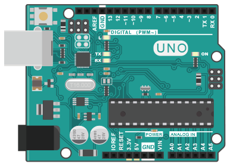

Maker
基本介紹
什麼是Maker？ 引言來自維基百科
自造者（英語：Maker，又譯為「創客」）概念來源於英文Maker和Hacker兩詞的綜合釋義，它是指一群酷愛科技、熱衷實踐的人群，他們以分享技術、交流思想為樂，以自造者為主體的社區（Makerspace）則成了自造者文化的載體。
而其中，DIY也含蓋在這個概念中，創課喜歡『自己』造出與時代多數產物不統、古怪但有特色加上自己想法的發明。
有什麼樣具體的特色呢？
DIY、有個實體成品
電路、機械、金屬加工……當作手段
創新為主，在成品融入自己的想法為重，商業化等等較為其次
分享與交流
為何近年才興起類似風潮？ 機械、電子電路、程式等等工具其實早就被發明了，但在早期這是一件非常「專業」的事情，不論是在「技術」或者是「經濟」成本都非常的高，並不是所有人都可以嘗試用這些工具開發，然而到了現在，你不需要了解非常多的計算機組織、作業系統等等，你還是能利用程式來做自己的事情，電子電路、機械等等也因為網路資源的關係大大降低學習門檻，不用一定要到特定科系或者是特定職業才能去學到專業的知識
常用的手段與應用
Arduino
什麼是Arduino 他是一個酷酷的單版為控制器，也就是一塊可以控制電路的小電腦
基本上是以C當作主要的程式語言，然後進行一些控制有的沒的，有興趣網路很多介紹影片，我們這邊不是那樣的地方

Arduino 重要在哪？
在Arduino 出現之前，若是想做個自動控制的設備，像是要控制一些感測器或是透過繼電器控制家電，大家想到的就是單晶片、8051，這時就必須深入了解單晶片的程設設計，除了程式難度較高，所需的設備成本也高出許多
Arduino常看到的用途 懶得找，給大家看影片
那Arduino跟Maker有什麼關係？ 基本上Arduino是讓你學一點程式和一點點電路結構互相結合的一個媒介，他省去了你需要做很多專業研究門檻，但可以讓你馬上感受到自己把東西刻出來的快感。
樹梅派
什麼是樹梅派
Raspberry Pi 是由劍橋大學的 Eben Upton 及其他幾位老師所設計的，最初只是為了提供一台平價的電腦和自由軟體，讓學生可以輕鬆取得，用來學習跟練習電腦科學的相關知識。

一樣，他擺在這個章節，就代表他可以跟一些電子電路串在一起，讓你可以實現一些酷酷的事情 那他跟Arduino有什麼差別 他有作業系統
或許你會很疑惑，有作業系統會怎麼樣，但簡單來說就是兩個不同的世界，一個是你要多去了解它要怎麼把程式弄進去等等的，但是在樹梅派裡面，他就跟你的電腦一樣。
當然，因為要把作業系統塞進去，硬體相對就需要強一點，理所當然他就會比較貴，所以要如何挑選這兩個不同的機器，就看你的實做預算考量，再挑選最適合你的機器